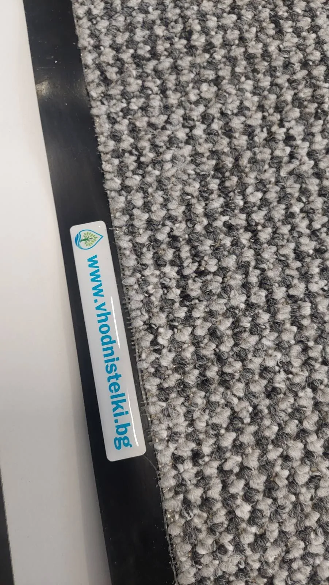

Избираме заедно
Уточняваме типа обект, размера на стелката и подходящия абонамент.
Чисти входни стелки в София. Редовна смяна.
Ние се грижим за детайлите, а вие — за всичко останало.
Малък детайл. Голяма разлика.
За жилищни входове, офиси и търговски обекти.
Един лесен процес. Редовна поддръжка.
Вход, който посреща както трябва.
Уточняваме типа обект, размера на стелката и подходящия абонамент.
Посещаваме ви по договорения график и заменяме използваната стелка с чиста.
Обработваме, ароматизираме и изсушаваме стелките за следващата смяна.

В ДЕТАЙЛИТЕ Е РАЗЛИКАТА.Входната стелка задържа замърсяванията още на прага. Но за да изпълнява своята работа, тя също има нужда от редовна грижа.
Затова поемаме целия цикъл — от избора на подходящ размер до професионалното почистване и редовната смяна.
Повече за нашия подходЧист и приветлив вход за всички съседи.
Практично решение за редовна поддръжка.
Повече грижа през по-натоварените месеци.
Зима: ноември–март · Лято: април–октомври
При целогодишен Премиум абонамент: релефна гумена стелка за външна употреба. Възможност за втора стелка с отстъпка.
Професионално посрещане още от прага.
Практично решение за редовна поддръжка.
Повече грижа през по-натоварените месеци.
Зима: ноември–март · Лято: април–октомври
При целогодишен Премиум абонамент се включва релефна гумена стелка.
Поддръжка, съобразена с потока от посетители.
Практично решение за редовна поддръжка.
Повече грижа през по-натоварените месеци.
Зима: ноември–март · Лято: април–октомври
При Премиум: възможност за втора стелка с отстъпка. За специфичен човекопоток изготвяме индивидуална оферта.
Професионално почистване с антибактериални препарати, ароматизиране, пълно изсушаване и редовна смяна на стелката според избрания пакет.
Стандарт включва 2 посещения месечно. При Премиум посещенията са 4 месечно през ноември–март и 2 месечно през април–октомври. Допълнителните условия зависят от типа обект.
Размерът се уточнява според техническите параметри и особеностите на вашия вход. Свържете се с нас, за да обсъдим подходящия вариант.
Да. Всички показани цени включват ДДС. Цената в евро е основна, а след нея е посочена и равностойността в лева.
Разбира се. Ако обектът ви има специфични изисквания или се нуждаете от повече стелки, изпратете запитване и ще обсъдим индивидуално решение.
Разкажете ни за обекта си.
Ще намерим подходящото решение заедно.